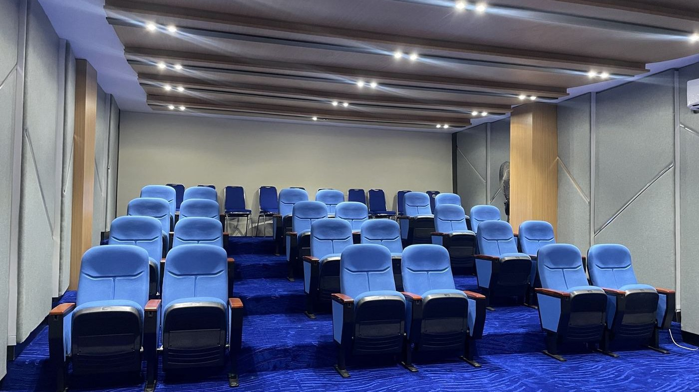

Memilih Kursi untuk Ruang Seminar: Apa yang Perlu Diperhatikan

Ruang seminar dipakai untuk presentasi, pelatihan, dan diskusi yang bisa berlangsung berjam-jam. Kursinya perlu nyaman, rapi, dan sesuai dengan cara ruangan dipakai.
Tidak semua kursi cocok untuk semua ruang seminar. Makanya ada baiknya Anda tentukan kebutuhan ruangan dulu sebelum membandingkan model.
Menata Kursi Auditorium Berundak: Pandangan, Lorong, dan Pemasangan
1. Kenali Dulu Cara Ruangan Dipakai
Ruang yang hanya dipakai untuk mendengarkan presentasi punya kebutuhan berbeda dengan ruang pelatihan yang pesertanya banyak mencatat. Tentukan dulu apakah peserta lebih banyak:
- Mendengarkan presentasi
- Mencatat atau memakai laptop
- Berdiskusi dalam kelompok
Jawaban ini memengaruhi model kursi yang cocok.
2. Perlu Meja Tulis atau Tidak
Bila peserta perlu mencatat atau memakai laptop, pertimbangkan kursi dengan meja tulis lipat. Bila ruangan lebih sering dipakai untuk mendengarkan, kursi tanpa meja tulis membuat tampilan lebih sederhana dan jarak antar baris lebih lega.
3. Pandangan ke Layar dan Podium
Dari semua kursi, peserta harus dapat melihat layar dan pembicara dengan jelas. Perhatikan posisi layar, podium, dan lorong sebelum menentukan jumlah baris dan tata letak. Kursi di baris paling belakang sering terlupakan padahal pandangannya paling jauh.
4. Tips Memilih Kursi Seminar
Sebelum memutuskan, cek hal-hal ini:
- Cek ketebalan busa dudukan dan sandaran, karena sesi panjang membuat kenyamanan terasa jauh lebih penting.
- Perhatikan bentuk sandaran dan lebar dudukan.
- Pilih warna pelapis yang serasi dengan lantai, karpet, dan dinding.
- Untuk ruangan yang dipakai bergantian banyak peserta, pilih warna yang tidak mudah terlihat kotor.
- Siapkan ukuran ruangan, jumlah peserta, dan letak layar atau podium sebelum menghubungi penyedia.
Sedang mencari kursi auditorium untuk kebutuhan ruangan Anda? Cahaya Mustika Internesia siap membantu Anda menemukan kursi auditorium Zeco yang sesuai.
Hubungi customer service kami untuk konsultasi gratis mengenai pilihan model, ukuran, bahan, dan harga. Kami siap membantu Anda memilih kursi sesuai kebutuhan.
PT Cahaya Mustika InternesiaJl. Penjernihan II No.7, Bend. Hilir, Tanah Abang, Jakarta Pusat 10210 · Admin: +62 811-330-1819Wujudkan Auditorium yang Nyaman dengan Kursi yang Tepat
Ceritakan ukuran ruangan dan kebutuhan acara Anda. Kami bantu memilihkan model kursi auditorium Zeco yang sesuai dengan kebutuhan dan anggaran Anda.